动态规划：线性 & 区间动态
理解动态规划的基本思想 了解动态规划算法的优缺点和问题分类 掌握运用动态规划解决问题的思路 能够运用动态规划解决线性、前缀和、区间这三类问题
简介


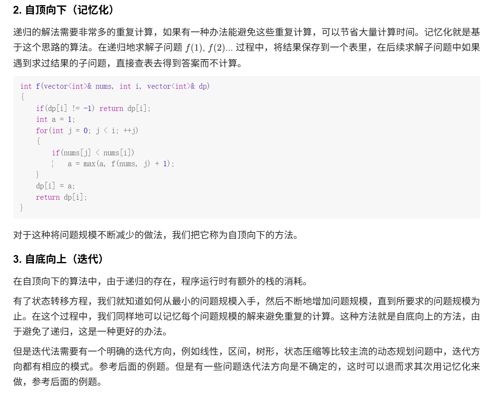

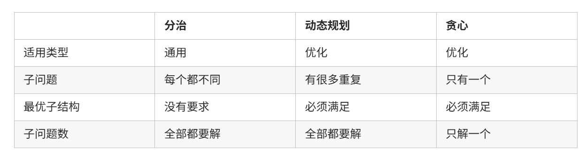
线性动态规划


单串


带维度单串 dp[i][k]


双串

 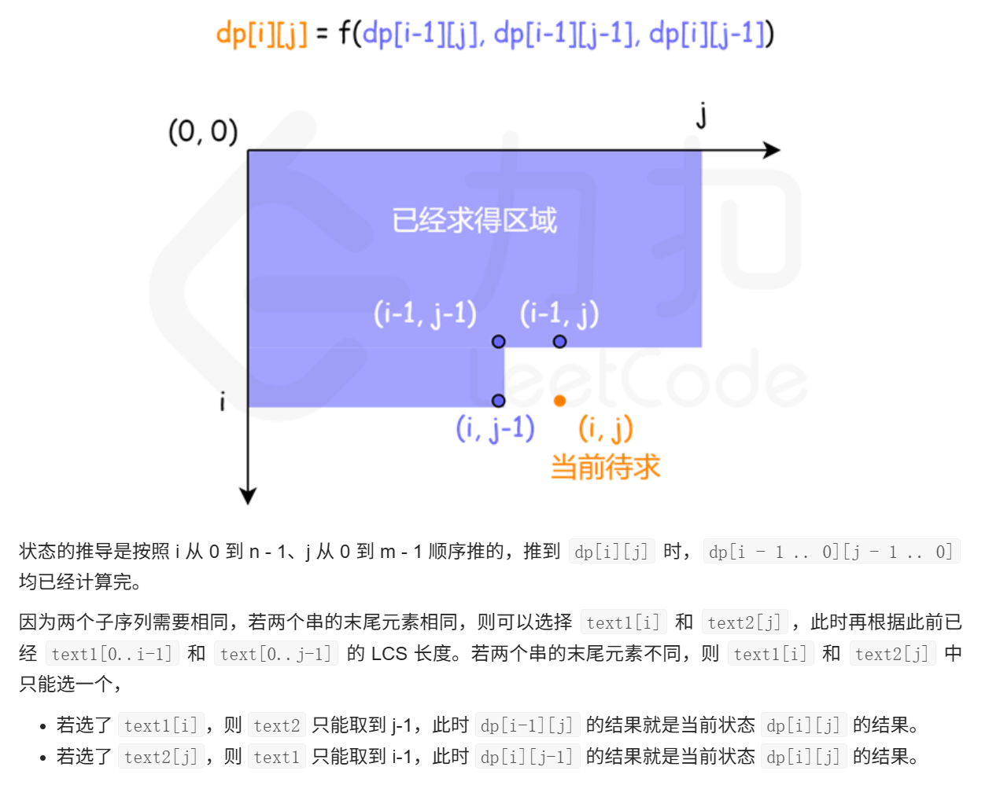
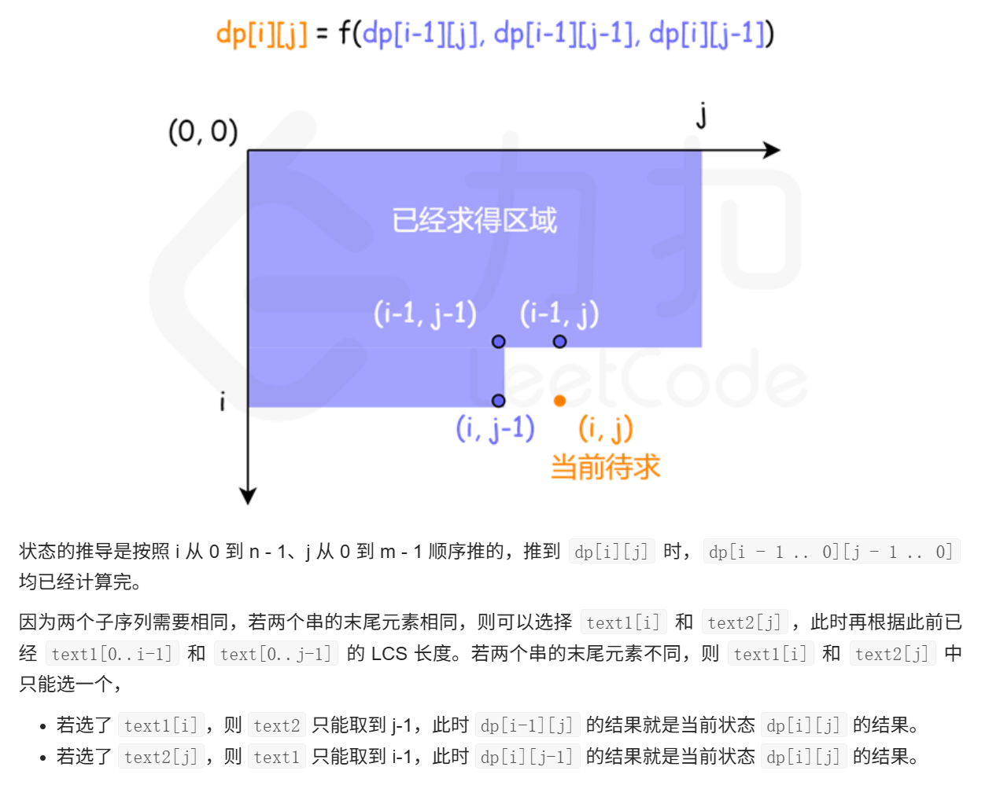


矩阵

 矩阵相关练习题
矩阵 dp[i][j]
矩阵 dp[i][j][k]
矩阵相关练习题
矩阵 dp[i][j]
矩阵 dp[i][j][k]
线性动态规划是动态规划中最基础的一类，它的状态一般物理意义很明确，易于分析。在初学动态规划时，通过线性动态规划的大量练习，可以不断加深动态规划的概念理解，例如动态规划中最重要的三个概念：最优子结构，重复子问题，无后效性。下面对动态规划的三个基本概念做个简要回顾，在线性动态规划的题目练习中可以不断地加深理解，之后再学习其它的动态规划类型就会容易很多。
最优子结构：如果问题的最优解所包含的子问题的解也是最优的，就称该问题具有最优子结构。 无后效性：即某阶段状态一旦确定，就不受这个状态以后决策的影响。也就是说，某状态以后的过程不会影响以前的状态，只与当前状态有关。 重复子问题：即子问题之间是不独立的，一个子问题在下一阶段决策中可能被多次使用到。（该性质并不是动态规划适用的必要条件，但是如果没有这条性质，动态规划算法同其他算法相比就不具备优势） 线性动态规划是动态规划中变化最多的一类。
首先线性动态规划针对的问题是最常见的数组，字符串，矩阵等，这三种数据结构本身就是线性的，因此出现这些类型的输入的时候，如果要用到动态规划，首先考虑线性动态规划就很合理了，因此很多问题不论最后正解是不是线性动态规划，都会首先想一下线性动态规划是否可行。
其次由于大部分问题的数据都是以这三种形式给出的，因此题目的变化会非常多，很多常见的输入形式以及问题都非常经典，都存在经典的状态设计。因此不考虑一些比较 Trick 的解法，仅仅是经典问题的经典状态设计，就比其它种类的动态规划问题多很多了。
例如单个数组或字符串上设计一维状态，两个数组或字符串上设计两维状态，以及矩阵上设计两维状态等等，同时以上三种情况的状态设计都有可能再加上额外的指标的状态，就是前面例题中的 k，这里面变化就很多了，比如有的题目在 k 这一维上要使用二分，贪心的策略，有的题目需要 DP 状态与数据结构配合来解决问题。
除此之外还有一类问题没有显式的数组，字符串，但是在求解的时候依然满足前面提到的动态规划三条基本概念，可以用动态规划求解，这种问题通常也是线性动态规划。如此多的变化仅仅本小节例举的题目是远远不够的，下一小节是线性动态规划的练习题，涉及到对线性动态规划的更多的变化。
前缀和
前缀和是一种查询数组中任意区间的元素的和的数据结构，这里数组给定之后就不变了。针对这个不变的数组，前缀和用于多次查询区间 [i, j] 上元素的和。
对于动态规划而言，前缀和的意义主要有两点：
一维和二维前缀和的推导，分别用到了单串和矩阵中最经典的状态设计以及状态转移； 在一些更复杂的动态规划问题中，状态转移的时候需要依赖区间和，因为状态转移是非常频繁的操作，因此必须高效地求区间和才能使得状态转移的时间复杂度可接受，此时就必须用到前缀和了。 除此之外，一些问题需要前缀和与其它数据结构配合来解决，也有两类：
先预处理出前缀和数组，这一步是动态规划，然后在前缀和数组上用其它数据结构解决； 还是按照动态规划的方式求前缀和，也需要额外的数据结构维护前缀和，但不是预处理好前缀和数组之后再用数据结构计算，而是每求出一个前缀和，就更新一次数据结构并维护答案。 前缀和的推导和计算隐含着动态规划的基本思想，同时它的状态设计是线性动态规划中比较简单的那一类。与线性动态规划一样，前缀和也有一维和二维两种场景。 虽然前缀和本身很简单，但需要用到它解决的问题非常多，与其它数据结构配合的变化也很多，因此需要从线性动态规划中剥离出来单独学习。
求区间和


数据结构维护前缀和


运算推广
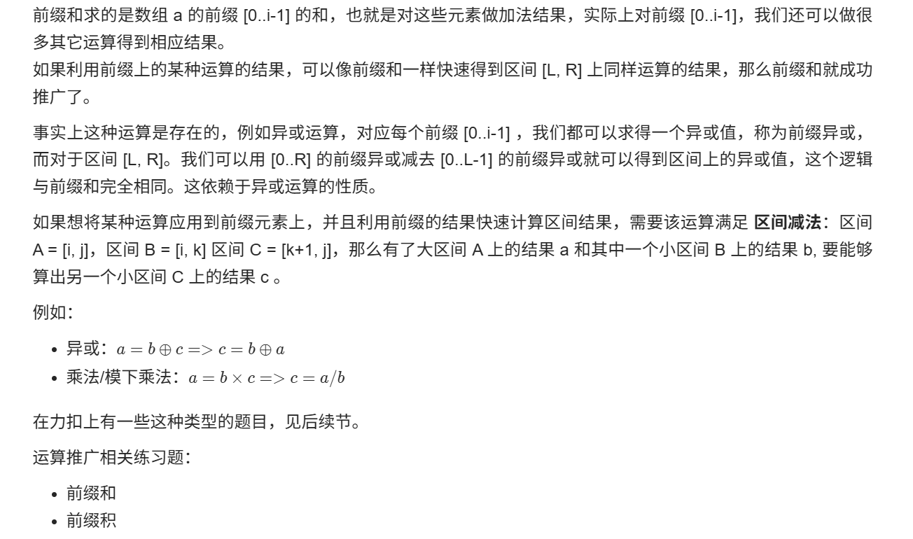
差分

区间动态规划
在输入为长度为 n 的数组时，子问题用区间 [i..j] 表示。 状态的定义和转移都与区间有关，称为区间动态规划


动态规划：状压、计数 & 数位动态
背包动态规划


状态压缩动态规划
状态压缩动态规划是一类非常典型的动态规划，通常使用在 NP 问题的小规模求解中，虽然是指数级别的复杂度，但速度比搜索快。


计数问题
动态规划中的计数型问题就是利用动态规划的算法思想去计算出解决这个问题有多少种方法。 比如，从起点走到终点，可以有多少条路径，注意，是多少条，而不是具体路线的描述。 当然也有具体每一条路线的问法，这是 dfs 的问题了。


 计数问题相关练习题
路径问题
卡特兰数
铺砖问题
斐波那契
隐晦的递推关系
计数问题相关练习题
路径问题
卡特兰数
铺砖问题
斐波那契
隐晦的递推关系
矩阵快速幂
是一种基础算法，本身与动态规划没有关系，但它可以用于优化线性递推关系的计算，并且其思路比较固定，因此在计数问题章节之后，在本章将矩阵快速幂做基础介绍。

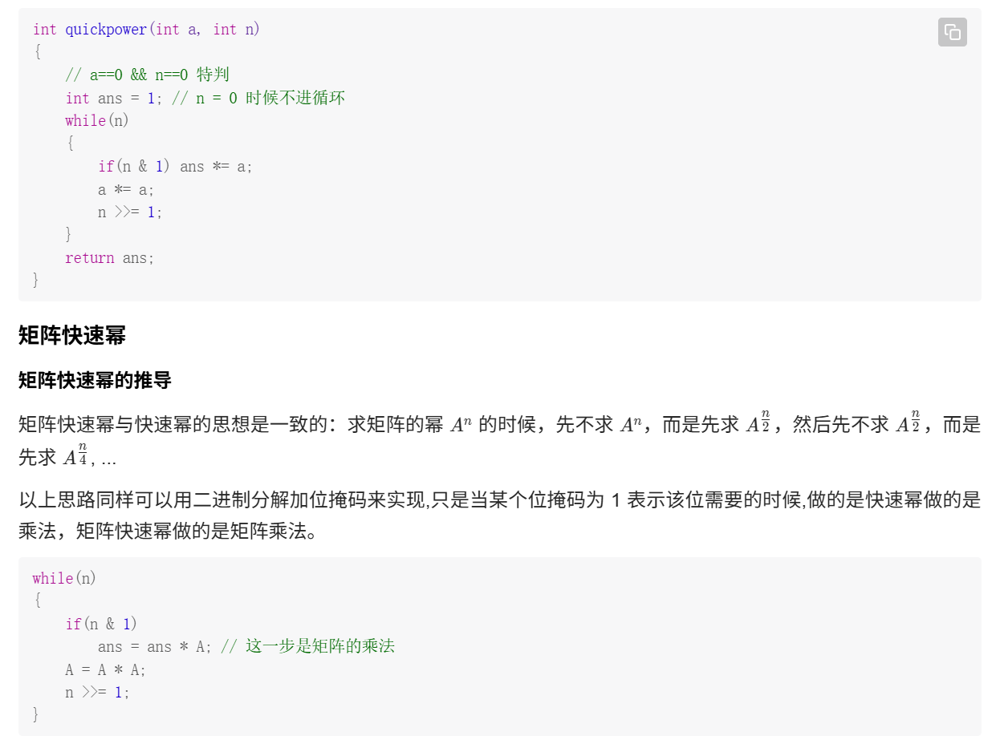

using ll = long long;
const int M = 2;
struct Ma
{
int a[M][M];
Ma()
{
memset(a, 0, sizeof(a));
}
void init() // 复位为单位阵
{
a[0][0] = a[1][1] = 1;
a[0][1] = a[1][1] = 0;
}
Ma operator*(const Ma& B) const
{
Ma ans;
for(int i = 0; i < M; ++i)
for(int j = 0; j < M; ++j)
for(int k = 0; k < M; ++k)
ans.a[i][j] += a[i][k] * B.a[k][j];
return ans;
}
Ma operator^(int n) const
{
Ma ans;
ans.init();
Ma A = *this; // 拷贝一个出来用于自乘
while(n)
{
if(n & 1)
ans = ans * A;
A = A * A;
n >>= 1;
}
return ans;
}
};
 在上一章中的 16 道练习题中，部分题目的递推关系是线性的，进而可以用矩阵快速幂来做，尝试判断哪些题目可以用矩阵快速幂做，并用矩阵快速幂解决这些问题，加深对本节的理解。
在上一章中的 16 道练习题中，部分题目的递推关系是线性的，进而可以用矩阵快速幂来做，尝试判断哪些题目可以用矩阵快速幂做，并用矩阵快速幂解决这些问题，加深对本节的理解。
数位 DP
在基础的动态规划问题当中算是比较难的一类，因为数位 DP 的状态的物理意义不太好理解。其它的动态规划，比如区间 DP 状态的物理意义就是区间，状态压缩 DP 中状态的物理意义就是集合，这都比较好理解。
但是数位 DP 比其它 DP 好的一面是数位 DP 的思维相对比较固定。 一个是解决的问题模式比较固定，一个是状态设计也比较固定，因此可以通过一些常见问题把数位 DP 的套路了解个大概。
力扣上有几道数位 DP 的题目，通过这些题目我们可以大致了解数位 DP 的思考过程和做法。
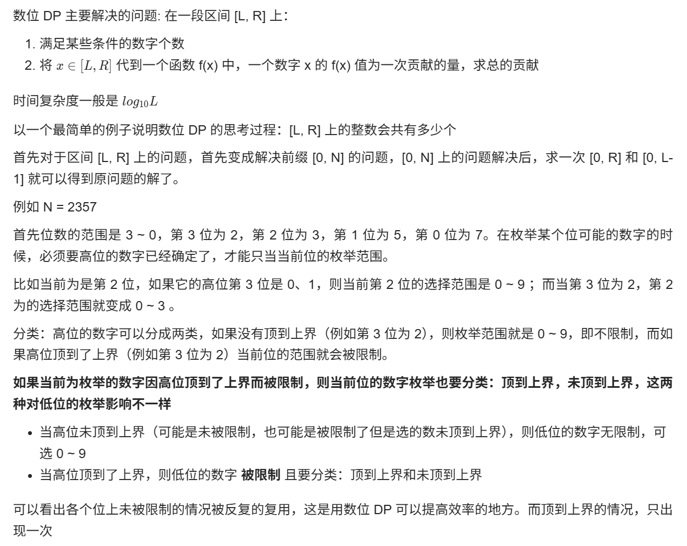


int getdp(int pos, int lim, const vector<int>& digits, const set<int>& num_set, vector<vector<int>>& dp)
{
if(pos == -1) return 1;
if(dp[pos][lim] != -1)
return dp[pos][lim];
dp[pos][lim] = 0;
int up = lim ? digits[pos] : 9; // 当前要枚举到的上界
for(int i: num_set) // 枚举当前位所有可能数字
{
if(i > up)
break;
dp[pos][lim] += getdp(pos - 1, lim && i == up, digits, num_set, dp); // 本位被限制且选顶到上界的数字,下一位才被限制
}
return dp[pos][lim];
}
前导零的分析 增加 zero 状态, 表示高位是否是前导零。
如果高位选了前导零，则当前位无限制，且还可以选前导零。 如果高位没有选前导零且未顶到上界，则当前位在可选数字集合的范围内无限制。 如果高位顶到了上界，则当前位的选择被限制。 力扣上数位 DP 的题目不多，下一节提供了 9 道练习题，可以巩固数位 DP 的思维方式。
动态规划：树形、图上、概率 & 博弈动态
1 2期回顾

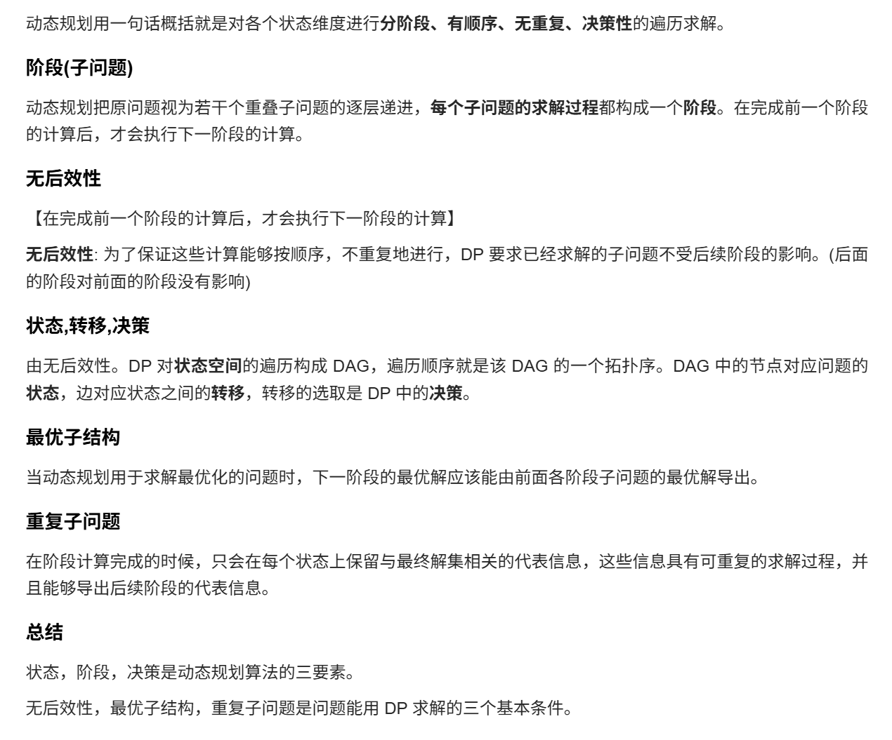
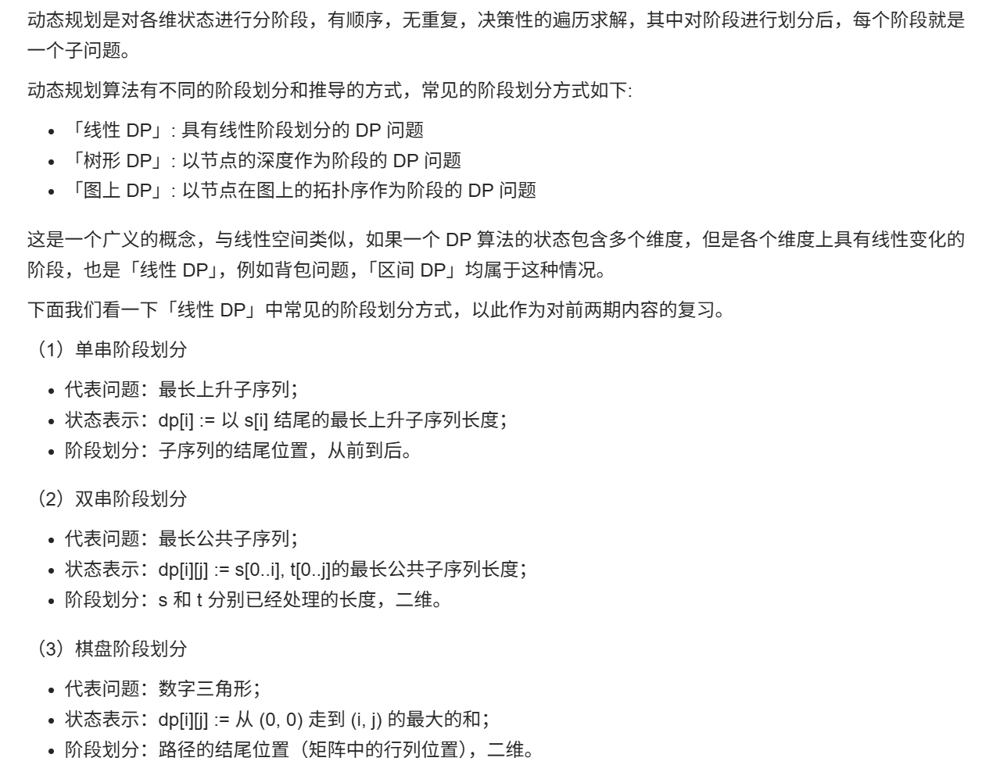
「单串 DP」 对于「单串线性 DP」问题，i 是单串 s 上的位置。作为阶段具有时间或者位置等含义。有时只有单串上的位置不足以表示状态，需要同时附加一个维度 k，一般 k 有长度、个数、次数、颜色等含义。另，所附加的维度有时候可以是多个，如 k1, k2, ...


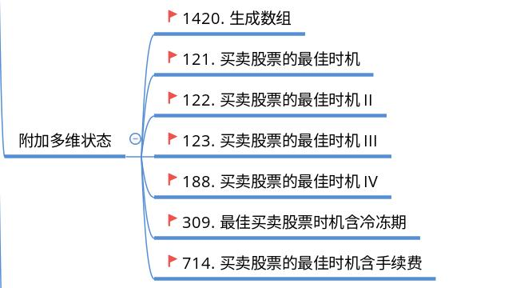


 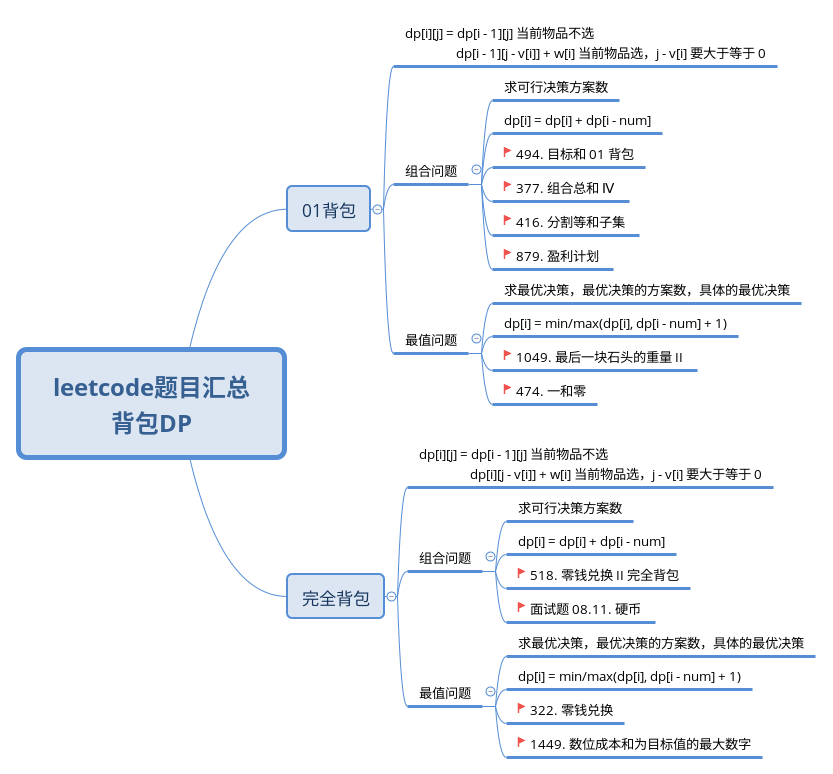
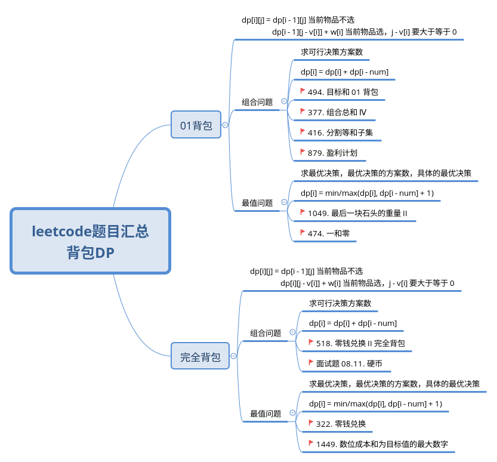
本章我们介绍「线性 DP」中比较重要，同时在前两期没有详细介绍的两块内容，一个是最长上升子序列，一个是「棋盘 DP」。
在动态规划精讲第一期中，我们有介绍过最长上升子序列问题并用动态规划的方法进行解决。实际上最长上升子序列还有其它解法，以及力扣上有很多最长上升子序列的变种问题以及包装之后的问题。我们在这一小节进行介绍。
首先我们介绍最长上升子序列基于二分的解法，这是 LIS 问题的最好的解法，除此之外还有用线段树优化DP的方式的解法，这部分在动态规划精讲第四期关于DP的优化方法中介绍。
然后我们介绍最长上升子序列的变形问题，一个是最长上升子序列个数，一个是最长上升子串。
然后我们介绍一些力扣上的一些多维属性的最长上升子序列问题。
最后我门介绍需要自定义 LIS 中的小于的一些问题，这些问题只要能正确定义小于，就可以转换成最长上升子序列问题。
在动态规划精讲第一期中，我们有介绍过在矩阵上进行线性推导的动态规划问题，但是没有系统地介绍，本小节将这个知识点补充一下。
「棋盘 DP」是一种在矩阵上进行状态推导的动态规划问题。i, j 分别是棋盘(矩阵)的横纵坐标，但并不一定要共同作为阶段。阶段划分有两种情况都比较常见：
仅 i 作为阶段，具有位置等含义。同时 j 是附加状态。 i, j 共同作为阶段，具有位置等含义。没有附加维度。 这两种阶段划分方式的思路有区别，第一种是一行一行地考虑，第二种是一个位置一个位置地考虑。
树形动态规划
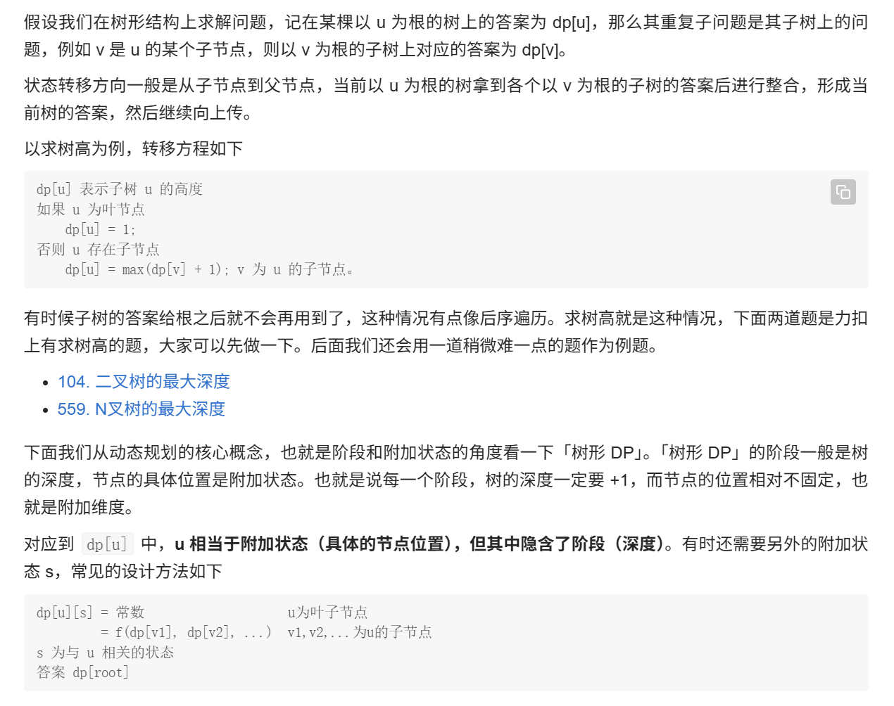


 注意到在节点 u 时，状态转移过程只需要 dp[v][0]，而不需要 dp[v][1]，因此 dfs 仅返回 dp[v][0] 即可。
注意到在节点 u 时，状态转移过程只需要 dp[v][0]，而不需要 dp[v][1]，因此 dfs 仅返回 dp[v][0] 即可。
代码中 max1 表示 dp[u][0], max2 表示 dp[u][1]。
class Solution {
public:
int treeDiameter(vector<vector<int>>& edges) {
int n = edges.size();
vector<vector<int> > g(n + 1);
for(const auto &e: edges)
{
g[e[0]].push_back(e[1]);
g[e[1]].push_back(e[0]);
}
int ans = 0;
dfs(0, -1, g, ans);
return ans;
}
private:
int dfs(int u, int fa, const vector<vector<int> >& g, int& ans)
{
int max1 = 0, max2 = 0;
for(int v: g[u])
{
if(v != fa)
{
int t = dfs(v, u, g, ans) + 1;
if(max1 < t)
{
max2 = max1;
max1 = t;
}
else if(max2 < t)
max2 = t;
}
}
ans = max(ans, (max1 + max2));
return max1;
}
};
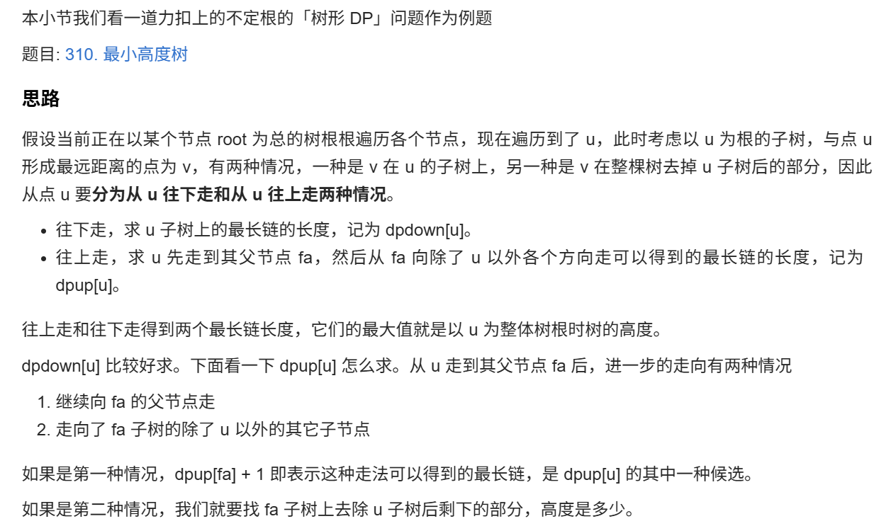


class Solution {
public:
vector<int> findMinHeightTrees(int n, vector<vector<int>>& edges) {
vector<vector<int> > g(n); // 邻接表
for(vector<int> &edge: edges)
{
g[edge[0]].push_back(edge[1]);
g[edge[1]].push_back(edge[0]);
}
vector<int> dpdown(n, 0), dpup(n, 0);
// 第一次DFS记录每个结点在作为子树根结点的最大高度。
dfs_1(0, -1, dpdown, g);
// 第二次DFS补全每个结点作为总根结点的最大高度，差距就在于需要统计上从父结点传递过来的子树分支。
dfs_2(0, -1, dpdown, dpup, g);
int min_ans = n;
vector<int> ans;
for(int i = 0; i < n; ++i)
{
if(min_ans > dpdown[i])
{
min_ans = dpdown[i];
ans.clear();
ans.push_back(i);
}
else if(min_ans == dpdown[i])
ans.push_back(i);
}
return ans;
}
private:
void dfs_1(int u, int fa, vector<int>& dpdown, vector<vector<int> >& g)
{
dpdown[u] = 0;
for(auto &v: g[u])
{
if(v == fa) continue;
dfs_1(v, u, dpdown, g);
dpdown[u] = max(dpdown[u], dpdown[v] + 1);
}
}
void dfs_2(int u, int fa, vector<int>& dpdown, vector<int>& dpup, vector<vector<int> >& g)
{
dpdown[u] = max(dpdown[u], dpup[u]);
int max_1 = 0, max_2 = 0; // 这里需要最大高度和次大高度
for(auto &v: g[u])
{
if(v == fa) continue;
if(max_1 < dpdown[v] + 1)
{
max_2 = max_1;
max_1 = dpdown[v] + 1;
}
else if(max_2 < dpdown[v] + 1)
max_2 = dpdown[v] + 1;
}
for(auto &v: g[u])
{
if(v == fa) continue;
if (max_1 == dpdown[v] + 1) {
// u 在 fa 的最长链上
dpup[v] = max(dpup[u], max_2) + 1;
dfs_2(v, u, dpdown, dpup, g);
}
else {
dpup[v] = max(dpup[u], max_1) + 1;
dfs_2(v, u, dpdown, dpup, g);
}
}
}
};
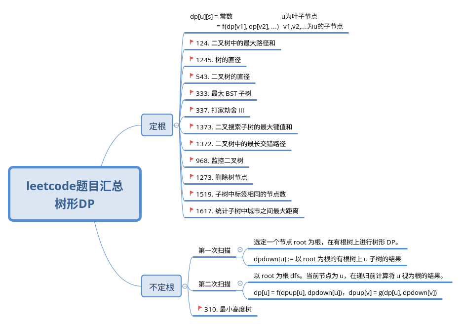 834. 树中距离之和 1569. 将子数组重新排序得到同一个二叉查找树的方案数 124. 二叉树中的最大路径和 543. 二叉树的直径 333. 最大 BST 子树 337. 打家劫舍 III 1373. 二叉搜索子树的最大键值和 1372. 二叉树中的最长交错路径 968. 监控二叉树 1273. 删除树节点 1519. 子树中标签相同的节点数 1617. 统计子树中城市之间最大距离
图上动态规划
「图上 DP」就是在图结构上的动态规划问题。一般图节点本身不作为阶段，而是作为阶段持有的状态。对于有向图，如果是无环的，那么就可以将节点本身作为阶段，此时一般用拓扑序进行推导。
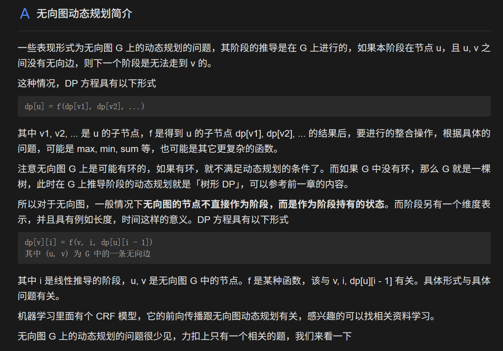

class Solution {
public:
vector<int> mostSimilar(int n, vector<vector<int>>& roads, vector<string>& names, vector<string>& targetPath) {
vector<vector<int>> g(n);
for(vector<int> &e: roads)
{
g[e[0]].push_back(e[1]);
g[e[1]].push_back(e[0]);
}
int m = targetPath.size();
vector<vector<int>> ed(n, vector<int>(m, -1));
for(int v = 0; v < n; ++v)
{
for(int i = 0; i < m; ++i)
ed[v][i] = names[v] != targetPath[i];
}
vector<vector<int>> dp(n, vector<int>(m + 1, INT_MAX / 2));
for(int v = 0; v < n; ++v)
dp[v][0] = ed[v][0];
for(int i = 1; i < m; ++i)
for(int v = 0; v < n; ++v)
{
for(int u: g[v])
dp[v][i] = min(dp[v][i], ed[v][i] + dp[u][i - 1]);
}
int end = -1;
int min_ed = INT_MAX / 2;
for(int v = 0; v < n; ++v)
{
if(dp[v][m - 1] < min_ed)
{
end = v;
min_ed = dp[v][m - 1];
}
}
vector<int> result(m);
result[m - 1] = end;
int next = end;
for(int i = m - 2; i >= 0; --i)
{
int u = -1;
for(int v: g[next])
if(dp[v][i] == dp[next][i + 1] - ed[next][i + 1])
{
u = v;
break;
}
result[i] = u;
next = u;
}
return result;
}
};

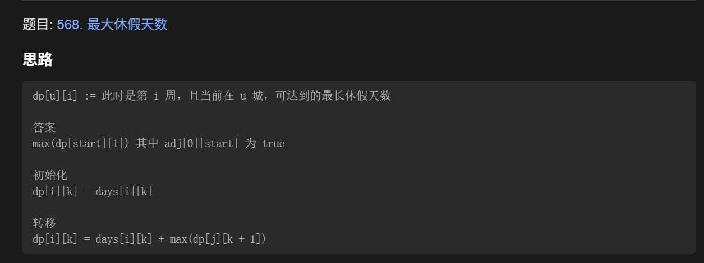
class Solution {
public:
int maxVacationDays(vector<vector<int>>& flights, vector<vector<int>>& days) {
int N = days.size();
int K = days[0].size();
// days : N * K
vector<vector<int>> dp(N, vector<int>(K, 0));
vector<vector<int>> &adj = flights;
for(int i = 0; i < N; ++i)
dp[i][K - 1] = days[i][K - 1];
for(int k = K - 2; k >= 0; --k)
for(int i = 0; i < N; ++i)
{
dp[i][k] = dp[i][k + 1]; // 不坐航班
for(int j = 0; j < N; ++j)
{
if(adj[i][j] == 1)
dp[i][k] = max(dp[i][k], dp[j][k + 1]);
}
dp[i][k] += days[i][k];
}
int ans = dp[0][0];
for(int start = 1; start < N; ++start)
{
if(adj[0][start] == 1)
ans = max(ans, dp[start][0]);
}
return ans;
}
};

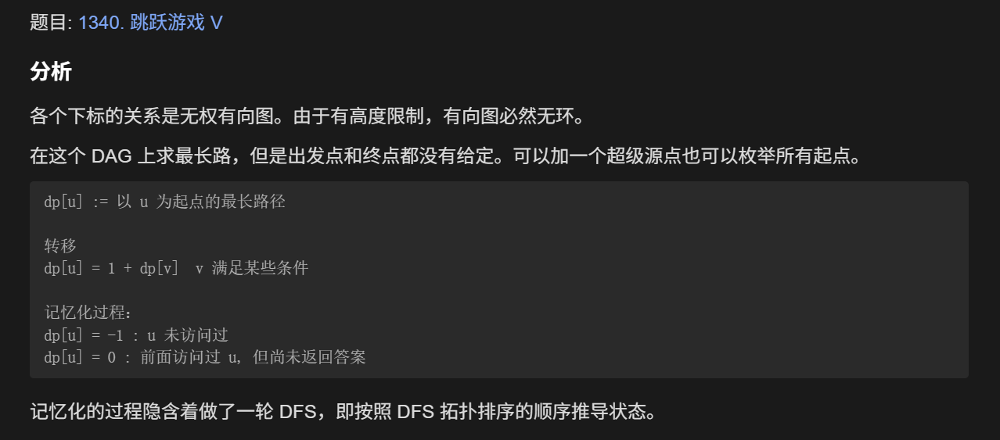
class Solution {
public:
int maxJumps(vector<int>& arr, int d) {
if(arr.empty()) return 0;
int n = arr.size();
dp = vector<int>(n, -1);
int ans = 1;
for(int i = 0; i < n; ++i)
if(dp[i] == -1)
ans = max(ans, solve(arr, d, i));
return ans;
}
private:
// dp[i] := 以 i 开头的最长路径
vector<int> dp;
int solve(const vector<int>& arr, const int d, int pos)
{
if(dp[pos] != -1)
return dp[pos];
dp[pos] = 0;
int n = arr.size();
for(int k = 1; k <= d; ++k)
{
int nxt = pos + k;
if(nxt >= n || arr[pos] <= arr[nxt])
break;
dp[pos] = max(dp[pos], 1 + solve(arr, d, nxt));
}
for(int k = 1; k <= d; ++k)
{
int nxt = pos - k;
if(nxt < 0 || arr[pos] <= arr[nxt])
break;
dp[pos] = max(dp[pos], 1 + solve(arr, d, nxt));
}
dp[pos] = max(1, dp[pos]);
return dp[pos];
}
};

概率动态规划
「概率 DP」、「期望 DP」 是一种应用动态规划解决求概率、期望问题的一类方法。 本章分为「概率 DP」 和 「期望 DP」 两部分。首先给出其理论基础以及对应的 DP 转移方程的形式；然后通过拆解两道例题帮助各位加深理解；最后列出同类型题目清单，帮助大家巩固学习。


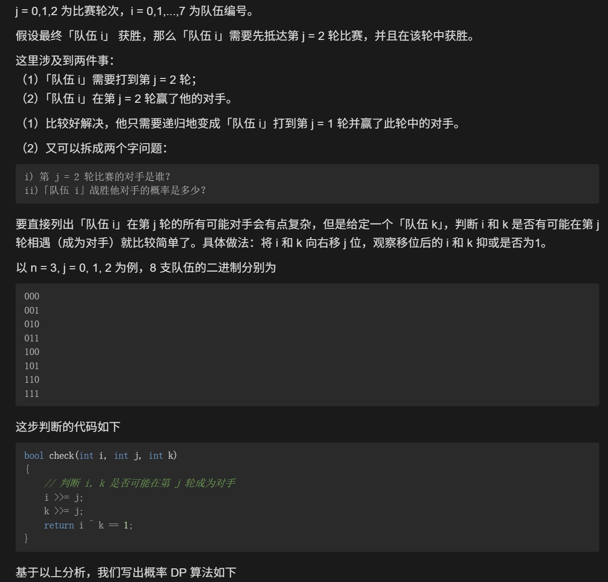
状态定义
dp[i][j] := 第 j 轮 i 获胜
答案
max(dp[n - 1][i])
初始化
dp[i][0] = p[i][k], if check(i, 0, k)
状态转移
dp[i][j] = sum(dp[i][j - 1] * dp[k]dp[j - 1] * p[i][k])
#include <cmath>
#include <iostream>
#include <vector>
using namespace std;
bool check(int i, int j, int k)
{
// 判断 i, k 是否可能在第 j 轮成为对手
i >>= j;
k >>= j;
return i ^ k == 1;
}
int main()
{
int n;
cin >> n;
int N = pow(2, n);
vector<vector<double>> P(N, vector<double>(N, -1.0));
for(int i = 0; i < N; ++i)
for(int j = 0; j < N; ++j)
cin >> P[i][j];
vector<vector<double>> dp(N, vector<double>(n, -1.0));
for(int i = 0; i < N; ++i)
{
if(i & 1)
dp[i][0] = P[i][i - 1];
else
dp[i][0] = P[i][i + 1];
}
for(int j = 1; j < n; ++j)
{
for(int i = 0; i < N; ++i)
for(int k = 0; k < N; ++k)
if(check(i, j, k))
dp[i][j] += dp[i][j - 1] * dp[k][j - 1] * P[i][k];
}
double max_p = -1.0;
int ans = -1;
for(int i = 0; i < n; ++i)
if(dp[i][n - 1] > max_p)
{
max_p = dp[i][n - 1];
ans = i;
}
cout << ans + 1 << endl;
}


#include <vector>
#include <iostream>
#include <iomanip>
using namespace std;
int main()
{
int M, T, N;
cin >> M >> T >> N;
vector<vector<double>> P(T, vector<double>(M, -1.0));
for(int i = 0; i < T; ++i)
for(int j = 0; j < M; ++j)
cin >> P[i][j];
vector<vector<double>> dp(M, vector<double>(M + 1, -1.0));
double pa = 1.0;
double pb_a = 1.0;
for(int t = 0; t < T; ++t)
{
dp.assign(N, vector<double>(M + 1, -1.0));
dp[0][0] = (1 - P[t][0]);
dp[0][1] = P[t][0];
for(int i = 1; i < M; ++i)
{
dp[i][0] = (1 - P[t][0]) * dp[i - 1][0];
for(int j = 1; j <= i; ++j)
dp[i][j] = P[t][i] * dp[i - 1][j - 1] + (1 - P[t][i]) * dp[i - 1][j];
}
pa *= 1 - dp[M - 1][0];
double tmp = 0.0;
for(int j = 1; j < N; ++j)
tmp += dp[M - 1][j];
pb_a *= tmp / (1 - dp[M - 1][0]);
}
pb_a = 1 - pb_a;
double ans = pa * pb_a;
cout << std::fixed << std::setprecision(4);
cout << ans << endl;
}
本节为大家汇总了力扣上 8 道「概率 DP」的题目，大家可以集中练习。
- 分汤
- 新21点
- 抛掷硬币
- “马”在棋盘上的概率
- 两个盒子中球的颜色数相同的概率 剑指 Offer 60. n个骰子的点数
- 飞机座位分配概率
- T 秒后青蛙的位置


#include <vector>
#include <fstream>
#include <iostream>
using namespace std;
double solve(int i, const int n, const int m, vector<double>& dp)
{
if(dp[i] > -0.5)
return dp[i];
if(i == m)
return dp[i] = 0.0;
return dp[i] = (n + (n - i) * solve(i + 1, n, m, dp)) / (n - i);
}
int main()
{
ifstream fin("data.txt");
vector<double> dp;
int n, m;
while((fin >> n) && (fin >> m))
{
cout << "n: " << n << ", m: " << m << endl;
dp.assign(m + 1, -1.0);
double ans = solve(0, n, m, dp);
cout << ans << endl;
}
}
模拟代码
import numpy as np
from multiprocessing import Pool
class Simulater:
def __init__(self, n, m):
self.n = n
self.m = m
def test(self, T):
np.random.seed()
N = 0
for _ in range(T):
i = 0
j = 0
visited = [False] * self.n
while j < self.m:
i += 1
x = np.random.randint(0, self.n)
if not visited[x]:
visited[x] = True
j += 1
N += i
return N / T
with open("data.txt") as f:
for line in f.readlines():
line = line.strip().split(" ")
n = int(line[0])
m = int(line[1])
s = Simulater(n, m)
T = int(5e5)
pool = Pool(8)
ts = pool.map(s.test, [T] * 8)
print(sum(ts) / 8)
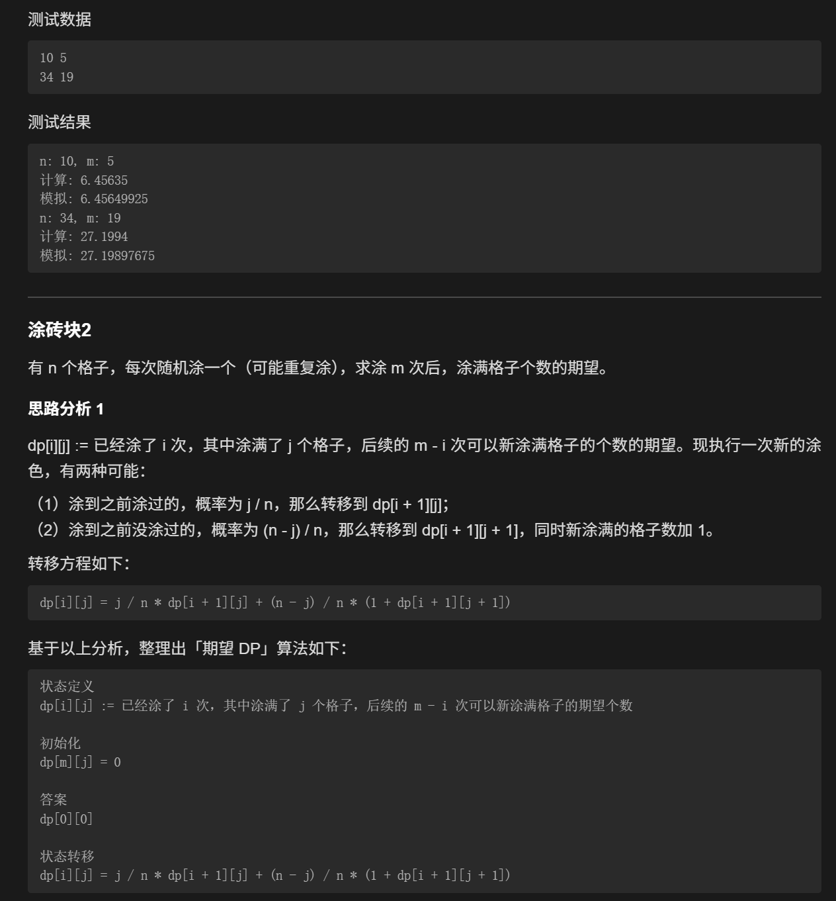

#include <vector>
#include <fstream>
#include <iostream>
using namespace std;
double solve(int i, int j, const int n, const int m, vector<vector<double>>& dp)
{
if(dp[i][j] > -0.5)
return dp[i][j];
if(i == m)
return dp[i][j] = 0.0;
double ans = 0.0;
ans += j / (double)n * solve(i + 1, j, n, m, dp);
ans += (n - j) / (double)n * (1 + solve(i + 1, j + 1, n, m, dp));
return dp[i][j] = ans;
}
int main()
{
ifstream fin("data.txt");
vector<vector<double>> dp;
int n, m;
while((fin >> n) && (fin >> m))
{
cout << "n: " << n << ", m: " << m << endl;
dp.assign(m + 1, vector<double>(m + 1, -1.0));
double ans = solve(0, 0, n, m, dp);
cout << ans << endl;
}
}
思路2
#include <vector>
#include <fstream>
#include <iostream>
using namespace std;
double solve(int i, const int n, const int m, vector<double>& dp)
{
if(dp[i] > -0.5)
return dp[i];
if(i == 0)
return dp[i] = 0.0;
return dp[i] = 1 + (n - 1) / (double)n * solve(i - 1, n, m, dp);
}
int main()
{
ifstream fin("data.txt");
vector<double> dp;
int n, m;
while((fin >> n) && (fin >> m))
{
cout << "n: " << n << ", m: " << m << endl;
dp.assign(m + 1, -1.0);
double ans = solve(m, n, m, dp);
cout << ans << endl;
}
}

博弈动态规划
博弈动态规划 「博弈 DP」，一种应用动态规划解决博弈问题的算法。本章首先给出理论基础（minimax）以及对应的 DP 转移方程形式；然后通过详细拆解 Leetcode 上 4 道题来学习这类问题的解决思路。「博弈 DP」在 Leetocde 上有不少题目，章节末尾将集中列出来，大家可以进行针对性练习。


class Solution {
public:
bool stoneGame(vector<int>& piles) {
int n = piles.size();
vector<vector<int>> dp(n, vector<int>(n));
int all = 0;
for(int i = 0; i < n; ++i)
{
all += piles[i];
dp[i][i] = piles[i];
}
for(int i = 0; i < n - 1; ++i)
dp[i][i + 1] = max(piles[i], piles[i + 1]);
for(int l = 3; l <= n; ++l)
{
// l 为区间长度
for(int i = 0; i + l <= n; ++i)
{
int j = i + l - 1;
dp[i][j] = max(piles[i] + min(dp[i + 2][j], dp[i + 1][j - 1])
,piles[j] + min(dp[i + 1][j - 1], dp[i][j - 2])
);
}
}
return dp[0][n - 1] * 2 > all;
}
};

class Solution {
public:
bool nimGame(vector<int>& piles) {
int n = piles.size();
vector<int> dp(1 << (n * 3), -1);
dp[0] = 0;
int t = 0;
for(int i = 0; i < n; ++i)
t += (piles[i] << (3 * i));
return solve(t, n, dp) == 1;
}
private:
int solve(int s, const int n, vector<int>& dp)
{
if(dp[s] != -1)
return dp[s];
for(int i = 0; i < n; ++i)
{
int m = ((s >> (i * 3)) & 7);
for(int j = 0; j < m; ++j)
{
int t = s & (~(7 << (i * 3)));
t += j << (i * 3);
if(solve(t, n, dp) == 0)
return dp[s] = 1;
}
}
return dp[s] = 0;
}
};

class Solution {
public:
int getMoneyAmount(int n) {
vector<vector<int> > dp(n + 1, vector<int>(n + 1, INT_MAX));
for(int i = 1; i <= n; ++i)
dp[i][i] = 0;
for(int j = 2; j <= n; ++j)
for(int i = j - 1; i >= 1; --i)
{
dp[i][j] = min(dp[i + 1][j] + i, dp[i][j - 1] + j);
for(int k = i + 1; k <= j - 1; ++k)
dp[i][j] = min(dp[i][j], max(dp[k + 1][j], dp[i][k - 1]) + k);
}
return dp[1][n];
}
};

class Solution {
public:
bool canWin(string s) {
int n = s.size();
if(n < 2) return false;
unordered_map<string, bool> dp;
return solve(s, dp);
}
private:
bool solve(string& s, unordered_map<string, bool>& dp)
{
int n = s.size();
if(dp.find(s) != dp.end()) // 该状态已经算过
return dp[s];
for(int i = 0; i < n - 1; ++i) // 枚举所有次态
{
if(s[i] == '+' && s[i + 1] == '+')
{
s[i] = '-';
s[i + 1] = '-';
bool f = solve(s, dp);
s[i] = '+';
s[i + 1] = '+';
if(!f)
return dp[s] = true;
}
}
return dp[s] = false;
}
};
本小节为大家汇总了力扣上 12 道关于「博弈 DP」的题目，大家可以集中练习。
翻转游戏 293. 翻转游戏 Nim 游戏 292. Nim 游戏 石子游戏 1140. 石子游戏 II 1406. 石子游戏 III 1510. 石子游戏 IV 井字游戏 348. 判定井字棋胜负 794. 有效的井字游戏 1275. 找出井字棋的获胜者 其它 486. 预测赢家 464. 我能赢吗 1025. 除数博弈 913. 猫和老鼠
滑动窗口和双指针
滑动窗口和双指针是解决字符串、数组等问题的常用技巧。通过维护一个窗口或两个指针，可以有效地遍历数据结构，达到优化时间复杂度的目的。
滑动窗口通常用于处理连续子数组或子字符串的问题。通过动态调整窗口的左右边界，可以在 O(n) 的时间复杂度内找到满足条件的子数组或子字符串。 双指针则常用于排序数组或链表的问题。通过两个指针同时遍历数据结构，可以有效地解决查找、合并等问题。
循环不变量
循环前、中、后保持不变 「循环不变量」不是很高深的概念，在「算法」和「数据结构」的世界里，到处都有它的身影。
「循环不变量」是指我们在编写代码的过程中，要一直循序不变的性质，这样的性质是根据要解决的问题，由我们自己定义的。「循环不变量」是我们写对一个问题的基础，保证了在「初始化」「循环遍历」「结束」这三个阶段相同的性质，使得一个问题能够被正确解决。


使用循环不变量写对代码
这一节我们讲解两个非常基础且常考的问题，向大家展示：我们在写代码的时候一定要明确自己对变量以及区间的定义是什么，并且在编写代码的过程中保持定义不变。


import java.util.Arrays;
public class Solution {
public void sortColors(int[] nums) {
int len = nums.length;
if (len < 2) {
return;
}
int zero = 0;
int two = len;
int i = 0;
while (i < two) {
if (nums[i] == 0) {
swap(nums, i, zero);
zero++;
i++;
} else if (nums[i] == 1) {
i++;
} else {
two--;
swap(nums, i, two);
}
}
}
private void swap(int[] nums, int index1, int index2) {
int temp = nums[index1];
nums[index1] = nums[index2];
nums[index2] = temp;
}
}

public class Solution {
public void sortColors(int[] nums) {
int len = nums.length;
if (len < 2) {
return;
}
int zero = -1;
int two = len - 1;
int i = 0;
while (i <= two) {
if (nums[i] == 0) {
zero++;
swap(nums, i, zero);
i++;
} else if (nums[i] == 1) {
i++;
} else {
swap(nums, i, two);
two--;
}
}
}
private void swap(int[] nums, int index1, int index2) {
int temp = nums[index1];
nums[index1] = nums[index2];
nums[index2] = temp;
}
}


import java.util.Arrays;
import java.util.Random;
public class Solution {
private static Random random = new Random(System.currentTimeMillis());
public int findKthLargest(int[] nums, int k) {
int len = nums.length;
// 第 k 大元素的下标是 len - k
int target = len - k;
int left = 0;
int right = len - 1;
while (true) {
int pIndex = partition(nums, left, right);
if (pIndex == target) {
return nums[pIndex];
} else if (pIndex < target) {
// 下一轮搜索区间 [pIndex + 1..right]
left = pIndex + 1;
} else {
// pIndex > target
// 下一轮搜索区间 [left..pIndex - 1]
right = pIndex - 1;
}
}
}
private int partition(int[] nums, int left, int right) {
// 注意：必须随机化
int randomIndex = left + random.nextInt(right - left + 1);
swap(nums, left, randomIndex);
int pivot = nums[left];
// [left + 1 .. le] <= pivot
// (le..i] > pivot
// 注意：一定要设置成 left ，否则交换会出错
int le = left;
for (int i = left + 1; i <= right; i++) {
// 这里写 < 或者 <= 都可以
if (nums[i] <= pivot) {
le++;
swap(nums, le, i);
}
}
swap(nums, left, le);
return le;
}
private void swap(int[] nums, int index1, int index2) {
int temp = nums[index1];
nums[index1] = nums[index2];
nums[index2] = temp;
}
}

import java.util.Random;
public class Solution {
private static Random random = new Random(System.currentTimeMillis());
public int findKthLargest(int[] nums, int k) {
int len = nums.length;
int left = 0;
int right = len - 1;
// 第 k 大元素的下标是 len - k
int target = len - k;
while (true) {
int index = partition(nums, left, right);
if (index == target) {
return nums[index];
} else if (index < target) {
left = index + 1;
} else {
right = index - 1;
}
}
}
public int partition(int[] nums, int left, int right) {
// 在区间随机选择一个元素作为标定点
int randomIndex = left + random.nextInt(right - left + 1 );
swap(nums, left, randomIndex);
int pivot = nums[left];
// 将等于 pivot 的元素分散到两边
// [left..le) <= pivot
// (ge..right] >= pivot
int le = left + 1;
int ge = right;
while (true) {
// 遇到 nums[le] >= pivot 的时候停下来
// 遇到与 pivot 相等的元素，是通过交换被等概率分到两边的
while (le <= ge && nums[le] < pivot) {
le++;
}
while (le <= ge && nums[ge] > pivot) {
ge--;
}
if (le > ge) {
break;
}
swap(nums, le, ge);
le++;
ge--;
}
// 这里还要交换，注意是 ge
swap(nums, left, ge);
return ge;
}
private void swap(int[] nums, int index1, int index2) {
int temp = nums[index1];
nums[index1] = nums[index2];
nums[index2] = temp;
}
}

import java.util.Random;
public class Solution {
private static Random RANDOM = new Random(System.currentTimeMillis());
public int findKthLargest(int[] nums, int k) {
int len = nums.length;
int target = len - k;
int left = 0;
int right = len - 1;
while (true) {
int[] pIndex = partition(nums, left, right);
int index1 = pIndex[0];
int index2 = pIndex[1];
if (target < index1) {
// 下一轮搜索区间 [left..index1 - 1]
right = index1 - 1;
} else if (target == index1) {
return nums[index1];
} else if (target < index2) {
left = index1 + 1;
right = index2 - 1;
} else if (target == index2) {
return nums[index2];
} else {
// pIndex > target
// 下一轮搜索区间 [index2 + 1..right]
left = index2 + 1;
}
}
}
private int[] partition(int[] nums, int left, int right) {
int randomIndex = left + RANDOM.nextInt(right - left + 1);
swap(nums, randomIndex, left);
// 循环不变量：
// all in [left + 1..lt] < pivot
// all in [lt + 1..i) = pivot
// all in [gt..right] > pivot
int pivot = nums[left];
int lt = left;
int gt = right + 1;
int i = left + 1;
while (i < gt) {
if (nums[i] < pivot) {
lt++;
swap(nums, i, lt);
i++;
} else if (nums[i] == pivot) {
i++;
} else {
gt--;
swap(nums, i, gt);
}
}
swap(nums, left, lt);
// 这里要特别小心
return new int[]{lt, gt - 1};
}
private void swap(int[] nums, int index1, int index2) {
int temp = nums[index1];
nums[index1] = nums[index2];
nums[index2] = temp;
}
}
滑动窗口 1：同向交替移动的两个变量
同向交替移动的两个变量 有一类数组上的问题，问我们固定长度的滑动窗口的性质，这一类问题在思维层面上相对简单。我们通过两道简单的例题向大家展示这一类问题的写法。

public class Solution {
public double findMaxAverage(int[] nums, int k) {
int len = nums.length;
// 由于题目限制了 k <= len，因此不用做特判
int windowSum = 0;
// 第 1 步：先求出第 1 个窗口的和
for (int i = 0; i < k; i++) {
windowSum += nums[i];
}
// 第 2 步：通过遍历求出除了第 1 个窗口的和
int res = windowSum;
// 循环不变量定义：[left..right) 是长度为 k 的窗口
for (int right = k; right < len; right++) {
// 加上一个数再减去一个数
windowSum = windowSum + nums[right] - nums[right - k];
res = Math.max(res, windowSum);
}
return (double) res / k;
}
}

 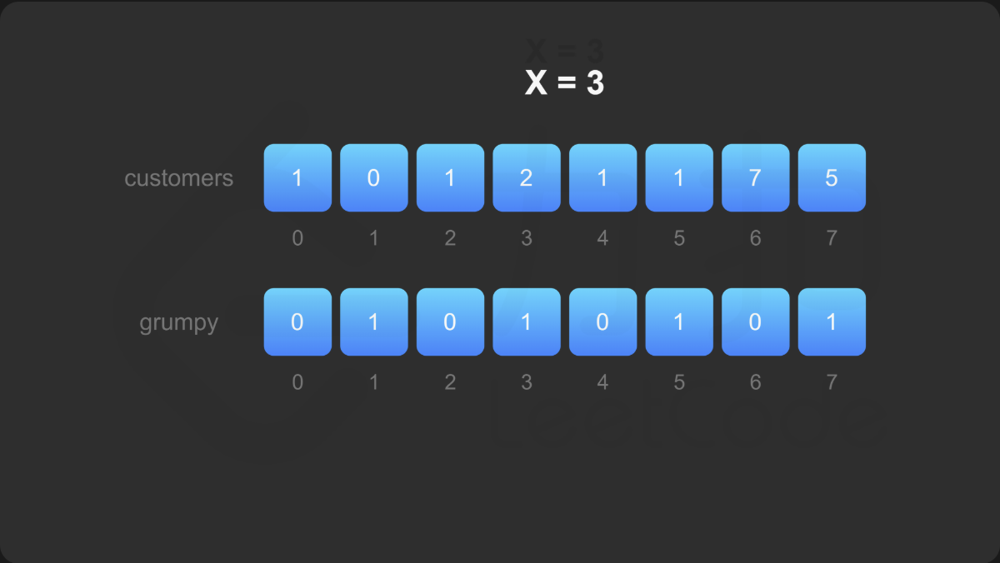
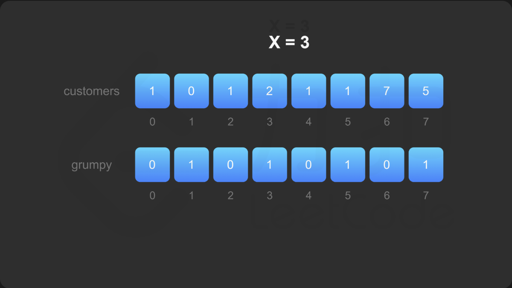
public class Solution {
public int maxSatisfied(int[] customers, int[] grumpy, int X) {
int len = grumpy.length;
// 前缀和 preSum[i] 表示 [0..i) 里因为老板生气而感到不开心的顾客数
int[] preSum = new int[len + 1];
// 统计 1. 所有本来就不生气的顾客数量；2. 前缀和数组
int originCount = 0;
for (int i = 0; i < len; i++) {
if (grumpy[i] == 0) {
// 不生气
originCount += customers[i];
preSum[i + 1] = preSum[i];
} else {
// 生气时候前缀和
preSum[i + 1] = preSum[i] + customers[i];
}
}
int maxAngryCount = 0;
// 固定长度的滑动窗口的左边界：[i..i + X)
for (int left = 0; left < len - X + 1; left++) {
maxAngryCount = Math.max(maxAngryCount, preSum[left + X] - preSum[left]);
}
// 所有本来就不生气的顾客
return originCount + maxAngryCount;
}
}
滑动窗口 2：不定长度的滑动窗口
有一类数组上的问题，需要使用两个指针变量（我们称为左指针和右指针），同向、交替向右移动完成任务。这样的过程像极了一个窗口在平面上滑动的过程，因此我们将解决这一类问题的算法称为「滑动窗口」问题。
掌握好这一类「滑动窗口」的问题，需要先从「暴力解法」开始分析，「滑动窗口」利用了问题本身的特点，在两个指针同向、交替向右移动的过程中，少考虑了很多「暴力解法」需要考察了情况，将时间复杂度降到了线性级别 O(N)（这里𝑁是数组的长度），如下图所示。


public class Solution {
public String minWindow(String s, String t) {
int[] window = new int[128];
int[] pattern = new int[128];
final int A = 'A';
for (Character c : t.toCharArray()) {
pattern[c - A]++;
}
int distance = 0;
for (int i = 0; i < 128; i++) {
if (pattern[i] > 0) {
distance++;
}
}
int sLen = s.length();
int start = 0;
int left = 0;
int right = 0;
int match = 0;
int minLen = sLen + 1;
while (right < sLen) {
Character curChar = s.charAt(right);
if (pattern[curChar - A] > 0) {
window[curChar - A]++;
if (window[curChar - A] == pattern[curChar - A]) {
match++;
}
}
right++;
while (match == distance) {
if (right - left < minLen) {
start = left;
minLen = right - left;
}
// 考虑左边界向右边走
Character leftChar = s.charAt(left);
if (pattern[leftChar - A] > 0) {
window[leftChar - A]--;
if (window[leftChar - A] < pattern[leftChar - A]) {
match--;
}
}
left++;
}
}
return minLen == sLen + 1 ? "" : s.substring(start, start + minLen);
}
}
 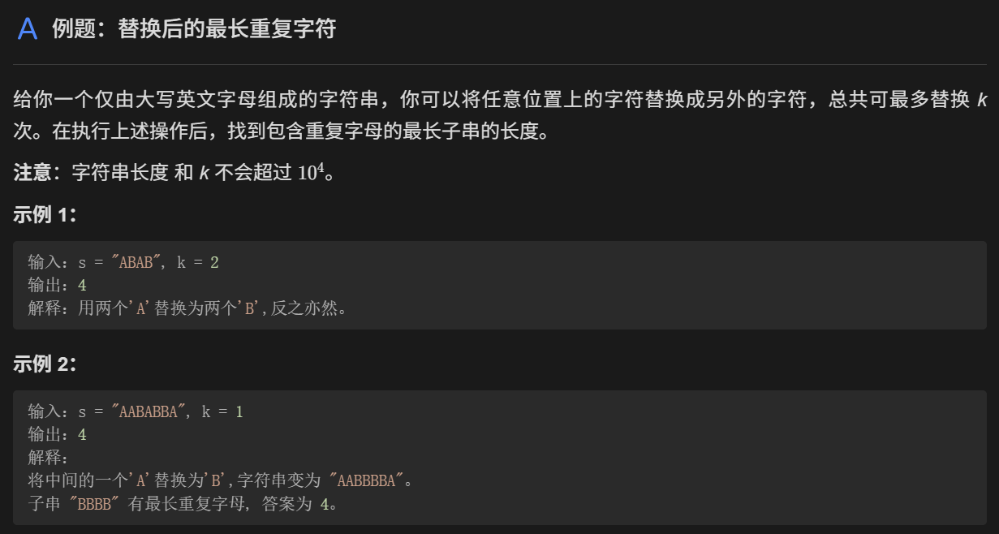
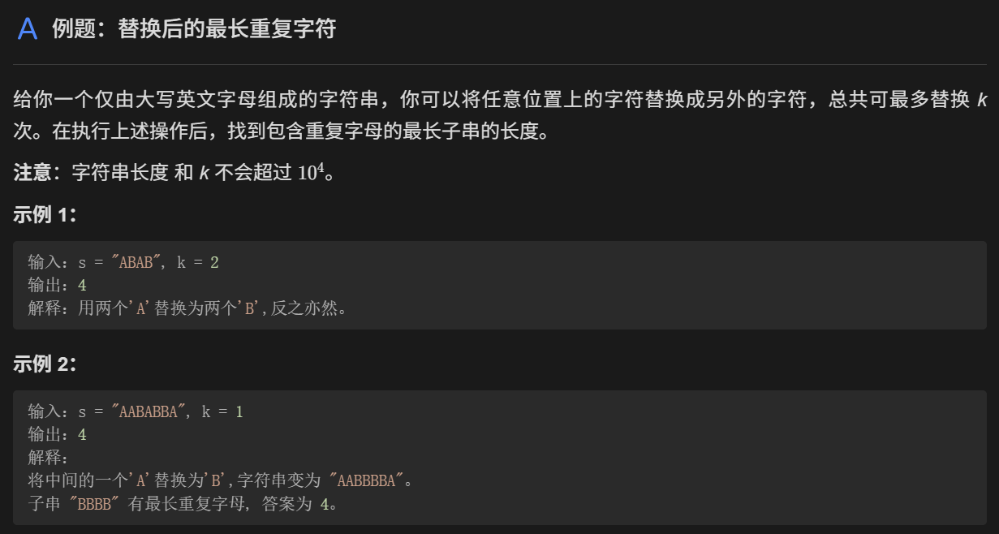


public class Solution {
public int characterReplacement(String s, int k) {
int len = s.length();
if (len < 2) {
return len;
}
char[] charArray = s.toCharArray();
int left = 0;
int right = 0;
int res = 0;
int maxCount = 0;
int[] freq = new int[26];
// [left, right) 内最多替换 k 个字符可以得到只有一种字符的子串
while (right < len){
freq[charArray[right] - 'A']++;
// 在这里维护 maxCount，因为每一次右边界读入一个字符，字符频数增加，才会使得 maxCount 增加
maxCount = Math.max(maxCount, freq[charArray[right] - 'A']);
right++;
if (right - left > maxCount + k){
// 说明此时 k 不够用
// 把其它不是最多出现的字符替换以后，都不能填满这个滑动的窗口，这个时候须要考虑左边界向右移动
// 移出滑动窗口的时候，频数数组须要相应地做减法
freq[charArray[left] - 'A']--;
left++;
}
res = Math.max(res, right - left);
}
return res;
}
}


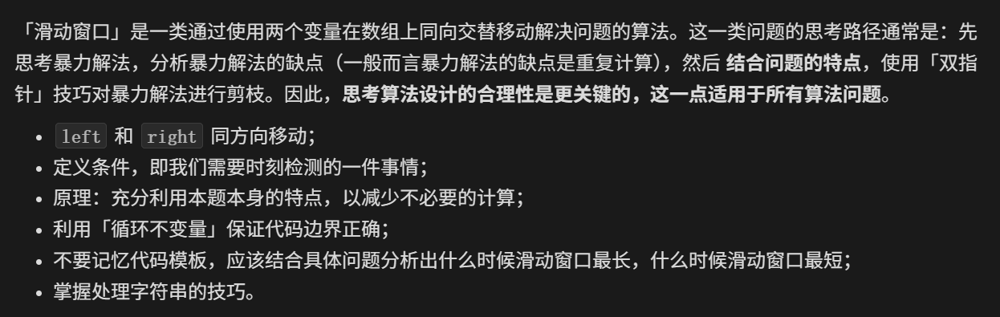
滑动窗口 3：计数问题选讲
这一节我们向大家介绍几个关于「滑动窗口」的计数问题，写对计数问题的标准是：不重不漏。

public class Solution {
public int lengthOfLongestSubstringTwoDistinct(String s) {
int len = s.length();
if (len < 3) {
return len;
}
char[] charArray = s.toCharArray();
int[] freq = new int[128];
// 滑动窗口里不同字符的个数
int count = 0;
int res = 2;
int left = 0;
int right = 0;
while (right < len) {
freq[charArray[right]]++;
if (freq[charArray[right]] == 1) {
count++;
}
right++;
while (count == 3) {
freq[charArray[left]]--;
if (freq[charArray[left]] == 0) {
count--;
}
left++;
}
// 退出循环以后有 count = 2，因此在这里选出最大值
res = Math.max(res, right - left);
}
return res;
}
}

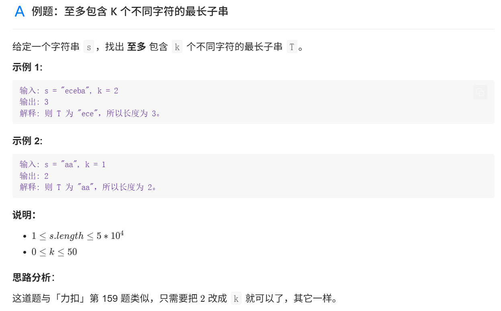
public class Solution {
public int lengthOfLongestSubstringKDistinct(String s, int k) {
int len = s.length();
if (len <= k) {
return len;
}
char[] charArray = s.toCharArray();
int[] freq = new int[128];
int count = 0;
int left = 0;
int right = 0;
int res = k;
while (right < len) {
freq[charArray[right]]++;
if (freq[charArray[right]] == 1) {
count++;
}
right++;
while (count == k + 1) {
freq[charArray[left]]--;
if (freq[charArray[left]] == 0) {
count--;
}
left++;
}
res = Math.max(res, right - left);
}
return res;
}
}

public class Solution {
public int numSubarrayBoundedMax(int[] nums, int left, int right) {
return lessEqualsThan(nums, right) - lessEqualsThan(nums, left - 1);
}
private int lessEqualsThan(int[] nums, int k) {
int len = nums.length;
int res = 0;
// 循环不变量：nums[left..right] 里的所有元素都小于等于 k
for (int left = 0, right = 0; right < len; right++) {
if (nums[right] > k) {
left = right + 1;
}
res += right - left;
}
return res;
}
}

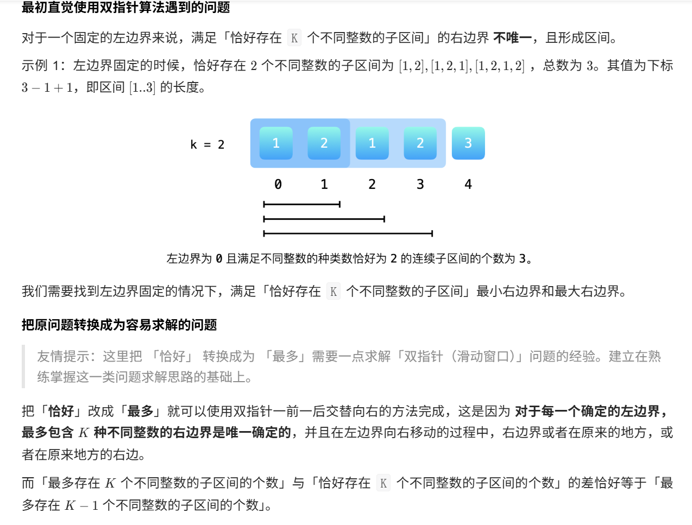

public class Solution {
public int subarraysWithKDistinct(int[] A, int K) {
return atMostKDistinct(A, K) - atMostKDistinct(A, K - 1);
}
/**
* @param A
* @param K
* @return 最多包含 K 个不同整数的子区间的个数
*/
private int atMostKDistinct(int[] A, int K) {
int len = A.length;
int[] freq = new int[len + 1];
int left = 0;
int right = 0;
// [left, right) 里不同整数的个数
int count = 0;
int res = 0;
// [left, right) 包含不同整数的个数小于等于 K
while (right < len) {
if (freq[A[right]] == 0) {
count++;
}
freq[A[right]]++;
right++;
while (count > K) {
freq[A[left]]--;
if (freq[A[left]] == 0) {
count--;
}
left++;
}
// [left, right) 区间的长度就是对结果的贡献
res += right - left;
}
return res;
}
}

滑动窗口 4：使用数据结构维护窗口性质
有一类问题只是名字上叫「滑动窗口」，但解决这一类问题需要用到常见的数据结构。这一节给出的问题可以当做例题进行学习，一些比较复杂的问题是基于这些问题衍生出来的。


class Solution {
public:
vector<int> maxSlidingWindow(vector<int>& nums, int k) {
int n = nums.size();
priority_queue<pair<int, int>> q;
for (int i = 0; i < k; ++i) {
q.emplace(nums[i], i);
}
vector<int> ans = {q.top().first};
for (int i = k; i < n; ++i) {
q.emplace(nums[i], i);
while (q.top().second <= i - k) {
q.pop();
}
ans.push_back(q.top().first);
}
return ans;
}
};

class Solution {
public:
vector<int> maxSlidingWindow(vector<int>& nums, int k) {
int n = nums.size();
deque<int> q;
for (int i = 0; i < k; ++i) {
while (!q.empty() && nums[i] >= nums[q.back()]) {
q.pop_back();
}
q.push_back(i);
}
vector<int> ans = {nums[q.front()]};
for (int i = k; i < n; ++i) {
while (!q.empty() && nums[i] >= nums[q.back()]) {
q.pop_back();
}
q.push_back(i);
while (q.front() <= i - k) {
q.pop_front();
}
ans.push_back(nums[q.front()]);
}
return ans;
}
};


class DualHeap {
private:
// 大根堆，维护较小的一半元素
priority_queue<int> small;
// 小根堆，维护较大的一半元素
priority_queue<int, vector<int>, greater<int>> large;
// 哈希表，记录「延迟删除」的元素，key 为元素，value 为需要删除的次数
unordered_map<int, int> delayed;
int k;
// small 和 large 当前包含的元素个数，需要扣除被「延迟删除」的元素
int smallSize, largeSize;
public:
DualHeap(int _k): k(_k), smallSize(0), largeSize(0) {}
private:
// 不断地弹出 heap 的堆顶元素，并且更新哈希表
template<typename T>
void prune(T& heap) {
while (!heap.empty()) {
int num = heap.top();
if (delayed.count(num)) {
--delayed[num];
if (!delayed[num]) {
delayed.erase(num);
}
heap.pop();
}
else {
break;
}
}
}
// 调整 small 和 large 中的元素个数，使得二者的元素个数满足要求
void makeBalance() {
if (smallSize > largeSize + 1) {
// small 比 large 元素多 2 个
large.push(small.top());
small.pop();
--smallSize;
++largeSize;
// small 堆顶元素被移除，需要进行 prune
prune(small);
}
else if (smallSize < largeSize) {
// large 比 small 元素多 1 个
small.push(large.top());
large.pop();
++smallSize;
--largeSize;
// large 堆顶元素被移除，需要进行 prune
prune(large);
}
}
public:
void insert(int num) {
if (small.empty() || num <= small.top()) {
small.push(num);
++smallSize;
}
else {
large.push(num);
++largeSize;
}
makeBalance();
}
void erase(int num) {
++delayed[num];
if (num <= small.top()) {
--smallSize;
if (num == small.top()) {
prune(small);
}
}
else {
--largeSize;
if (num == large.top()) {
prune(large);
}
}
makeBalance();
}
double getMedian() {
return k & 1 ? small.top() : ((double)small.top() + large.top()) / 2;
}
};
class Solution {
public:
vector<double> medianSlidingWindow(vector<int>& nums, int k) {
DualHeap dh(k);
for (int i = 0; i < k; ++i) {
dh.insert(nums[i]);
}
vector<double> ans = {dh.getMedian()};
for (int i = k; i < nums.size(); ++i) {
dh.insert(nums[i]);
dh.erase(nums[i - k]);
ans.push_back(dh.getMedian());
}
return ans;
}
};
 由于
small
small 是大根堆，
large
large 是小根堆，因此根本就不存在与
num
num 值相同的元素，也就不可能会被延迟删除了。
由于
small
small 是大根堆，
large
large 是小根堆，因此根本就不存在与
num
num 值相同的元素，也就不可能会被延迟删除了。
链表中的双指针问题
解决链表中的一些问题有些时候需要一些脑洞，并没有那么容易想到。好在这些问题只需要掌握这些常见的技巧就可以了。其中最典型的技巧就是「快慢指针」，也称为「同步指针」。事实上，解决它们都是在链表中使用了两个变量，因此也称为「双指针」技巧。


class Solution {
public:
bool hasCycle(ListNode *head) {
unordered_set<ListNode*> seen;
while (head != nullptr) {
if (seen.count(head)) {
return true;
}
seen.insert(head);
head = head->next;
}
return false;
}
};


class Solution {
public:
bool hasCycle(ListNode* head) {
if (head == nullptr || head->next == nullptr) {
return false;
}
ListNode* slow = head;
ListNode* fast = head->next;
while (slow != fast) {
if (fast == nullptr || fast->next == nullptr) {
return false;
}
slow = slow->next;
fast = fast->next->next;
}
return true;
}
};


class Solution {
public:
int getLength(ListNode* head) {
int length = 0;
while (head) {
++length;
head = head->next;
}
return length;
}
ListNode* removeNthFromEnd(ListNode* head, int n) {
ListNode* dummy = new ListNode(0, head);
int length = getLength(head);
ListNode* cur = dummy;
for (int i = 1; i < length - n + 1; ++i) {
cur = cur->next;
}
cur->next = cur->next->next;
ListNode* ans = dummy->next;
delete dummy;
return ans;
}
};

class Solution {
public:
ListNode* removeNthFromEnd(ListNode* head, int n) {
ListNode* dummy = new ListNode(0, head);
stack<ListNode*> stk;
ListNode* cur = dummy;
while (cur) {
stk.push(cur);
cur = cur->next;
}
for (int i = 0; i < n; ++i) {
stk.pop();
}
ListNode* prev = stk.top();
prev->next = prev->next->next;
ListNode* ans = dummy->next;
delete dummy;
return ans;
}
};


class Solution {
public:
ListNode* removeNthFromEnd(ListNode* head, int n) {
ListNode* dummy = new ListNode(0, head);
ListNode* first = head;
ListNode* second = dummy;
for (int i = 0; i < n; ++i) {
first = first->next;
}
while (first) {
first = first->next;
second = second->next;
}
second->next = second->next->next;
ListNode* ans = dummy->next;
delete dummy;
return ans;
}
};


class Solution {
public:
ListNode* middleNode(ListNode* head) {
int n = 0;
ListNode* cur = head;
while (cur != nullptr) {
++n;
cur = cur->next;
}
int k = 0;
cur = head;
while (k < n / 2) {
++k;
cur = cur->next;
}
return cur;
}
};

class Solution {
public:
ListNode* middleNode(ListNode* head) {
ListNode* slow = head;
ListNode* fast = head;
while (fast != NULL && fast->next != NULL) {
slow = slow->next;
fast = fast->next->next;
}
return slow;
}
};

双指针：相向交替移动的两个变量
相向交替移动的两个变量 「双指针」是指通过两个变量交替相向移动完成任务的算法，具体来说，可以使用两个变量 i 和 j ，初始的时候，i 和 j 分别指向数组的第一个元素和最后一个元素，然后指针 i 不断向右移动， 指针 j 不断向左移动，直到它们相遇。这样设计的算法少考虑了很多暴力解法需要考虑的情况，如下图所示

贪心算法
贪心算法是对完成一件事情的方法的描述，贪心算法每一次都做出当前看起来最好的选择，而不用考虑其它可能的选择。
贪心算法的学习可以与动态规划算法进行比较，看看它到底比动态规划算法少考虑了哪些子问题，为什么可以少考虑那些子问题，而每次只专注于求解一个子问题，通过逐步递推得到原问题的答案。